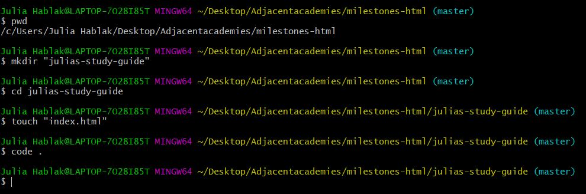

Julia's Study Guide for HTML & CSS
This is a study guide I made so that I (and potentially others) can better understand the basics of HTML and CSS. To start, here is a screenshot showing how to start your website from the command line/gitbash:

- pwd means present working directory and is used to see what directory (file) you are currently in.
- mkdir is used to make a new directory.
- cd is used to move into another directory. In this case, I want to move into the directory I just created, "julia's-study-guide".
- touch is used to make a new file. The homepage will always be called "index.html"
- code . is used to open the files in that directory in VScode.